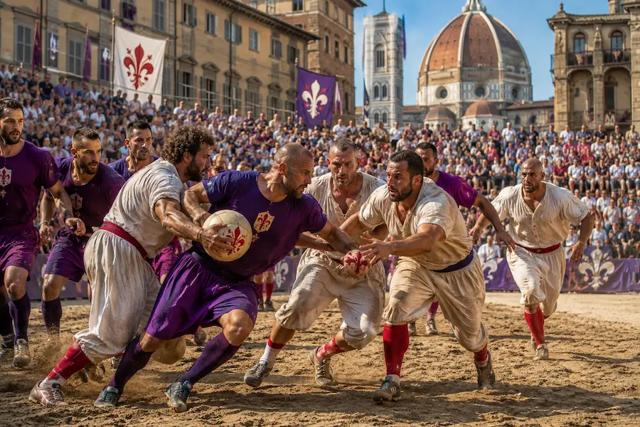

⚔️ Calcio Storico
In Florence, four teams representing the city's historic districts compete in a spectacular sport combining ball play, wrestling and physical contact.
Where, when and how?
📍 Where?
Matches take place in Piazza Santa Croce, in the heart of Florence's historic centre, which is transformed into a sand-covered arena for the occasion.
📅 When?
The tournament takes place in June. The semi-finals are generally held a few days before the final, traditionally played on June 24, the feast day of St John the Baptist, patron saint of Florence.
🚶 How to get there?
Piazza Santa Croce is located in the heart of Florence and can easily be reached on foot from the main attractions in the historic centre.
🎟️ Attending the matches
Tickets are limited and may only go on sale a few days before certain matches. It is advisable to check availability as soon as official ticket sales are announced.